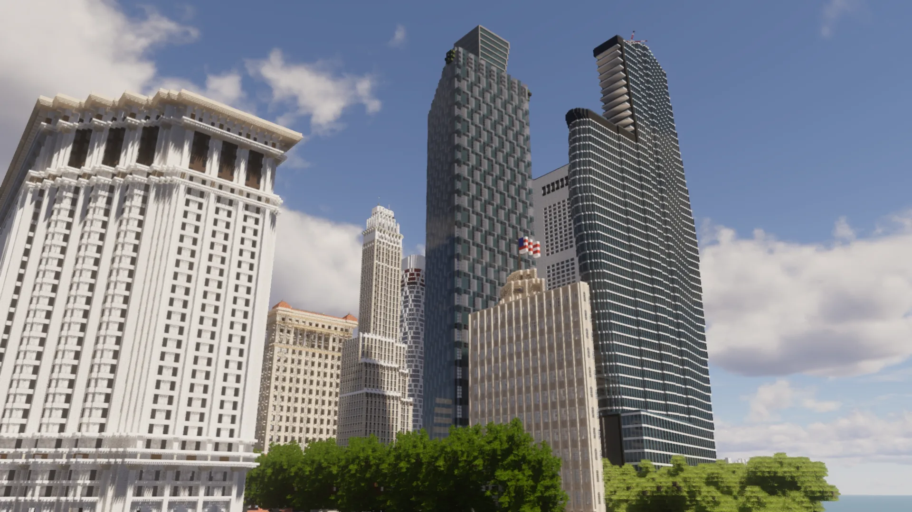

A modern, design-forward coastal city.

Kassan is a modern, design-forward city — contemporary urbanism and high-density form, drawing on Miami and New York. Clean lines, bold massing, and curated materials, grounded in realistic urban logic.
Modern towers against compact districts — bold massing balanced by intentional spacing.
A clear, intentional city structure — waterfront development inside a legible plan.
The energy and style of a modern metropolis — not one city copied, but its rhythm captured.